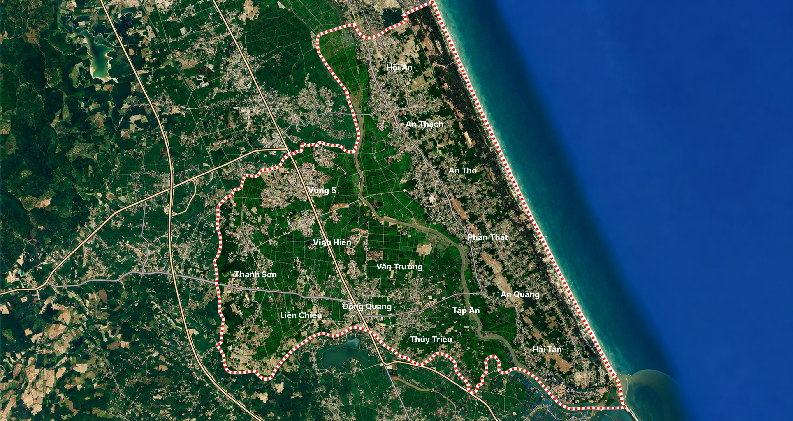

KHU VỰC TRỌNG ĐIỂM
VÀ SƠ TÁN NHÂN DÂN
PHÂN LOẠI ĐIỂM
KV NGẬP LỤT, SƠ TÁN (11 ĐIỂM)
DK KV XẢY RA SẠT LỠ (5 ĐIỂM)
TUYẾN ĐƯỜNG BỊ CHIA CẮT (7 ĐIỂM)
ĐÊ KÈ CÓ NGUY CƠ SỰ CỐ
THỜI GIAN CƠ ĐỘNG

ĐIỂM 01
Điểm 01
Nội dung mô tả của điểm.
ĐIỂM 01
Điểm 01
Nội dung mô tả của điểm.
ĐIỂM 01 / 16